MeshTrack
Handleiding voor de tracker en de website

MeshTrack volgt trackers via het MeshCore-netwerk: een netwerk van radio's (LoRa) die berichten voor elkaar doorgeven. Er is geen gsm-netwerk, geen simkaart en geen internet nodig.
De tracker is een Seeed T1000-E: zo groot als een bankkaart, met GPS, een bewegingssensor, een buzzer, één knop en een led.
| Indrukken | Wat gebeurt er |
|---|---|
| 1 keer | Meteen een positie sturen. Na de modusbiep betekenen twee hoge biepjes dat de tracker zijn bericht via een repeater terug hoorde (het is de mesh op), en één lage toon dat hij binnen 12 s geen herhaling hoorde of geen trackingkanaal heeft. Of de server het ontving, zie je op de kaart. Hooguit één keer per 10 s. |
| 2 keer | Van modus wisselen: één biep = tracker, twee biepjes = companion. Je hebt tot 0,8 s tussen de twee klikken. |
| 3 keer | De buzzer aan- of uitzetten. |
| 2 tot 8 s vasthouden | SOS. Na 2 s klinken drie hoge biepjes: de SOS is gewapend. Laat los en hij stuurt meteen een SOS met zijn positie, en daarna nog twee keer met een verse positie, telkens een minuut later. Na 6,5 s klinkt een lage waarschuwingstoon: blijf je vasthouden, dan schakelt hij uit in plaats van een SOS te sturen. Ontvangt de server de SOS, dan bevestigt hij dat: de tracker speelt drie stijgende tonen. Staat SOS met de knop uit (firmware 0.8.0 of nieuwer), dan gebeurt er niets: geen biepjes en geen SOS. |
| langer dan 8 s | Uitschakelen, ook als SOS uit staat. Weer aanzetten: de knop enkele seconden inhouden, of aan USB hangen. |
Automatisch verstuurde posities maken standaard geen geluid. Vanaf firmware 0.8.0 kun je dat aanzetten, als tracker en als companion (Toestellen → Knop en biepjes):
tx_beep): een kort biepje telkens de radio een automatische
positie verstuurd heeft.heard_beep): twee hoge biepjes zodra een repeater
een automatische positie herhaalt. Dat kost wat batterij: na elk bericht blijft de radio ongeveer 12 s wakker om te luisteren.Een klik en een SOS houden altijd hun eigen biepjes, ook als deze twee instellingen uit staan.
set sos uit). Uitschakelen door lang vasthouden blijft werken.De groene led flitst kort om de 4 seconden zolang de firmware draait. Een langere flits (een halve tel) betekent dat er ongelezen berichten wachten voor de MeshCore-app. In trackermodus blijft de led standaard uit: dat spaart stroom.
Hang de tracker aan de magnetische laadkabel. Hij meldt meteen aan de server dat hij aan de lader hangt (en later dat hij eraf gehaald is). Aan USB is hij altijd companion; haal je hem eraf, dan gaat hij terug naar de modus die je laatst koos.
Zolang hij beweegt, stuurt hij een positie zodra aan een van deze regels voldaan is, maar nooit vaker dan nooit vaker dan 1× per toelaat.
| Regel | Wanneer | Standaard |
|---|---|---|
| Afstand | Verder verplaatst dan de minimale verplaatsing en sneller dan de minimumsnelheid (0 = ook wandelen). | 100 m, 10 km/u |
| Bocht | Richting meer gedraaid dan scherpe bocht vanaf, en sneller dan bochten pas boven. | 30°, 5 km/u |
| Ritme | In beweging hoe dan ook minstens één positie per in beweging minstens 1× per. | 10 min |
| Stilstand | Langer stil dan slapen na stilstand van: laatste positie, daarna slapen. | 5 min |
| Heartbeat | In rust een teken van leven. | 12 uur |
Een bewegingssensor maakt hem weer wakker; de eerste positie daarna heet wakker door beweging. Elk bericht gaat één keer via het kanaal de mesh in, zonder bevestiging; gaat er een verloren, dan reizen de bewaarde punten mee met het volgende.
In beweging bewaart de tracker elke 15 s een punt (instelbaar). Elk bericht neemt zoveel bewaarde punten mee als erin passen, elk met zijn eigen tijd. Je stelt dus in hoe vaak hij verstuurt en hoe vaak hij een punt neemt: een fijn spoor met weinig berichten. De punten komen chronologisch op de kaart; gaat een bericht verloren, dan reizen ze mee met het volgende.
| Code | Op de website | Betekenis |
|---|---|---|
| M | positie (beweging) | Positie terwijl hij beweegt. |
| W | wakker door beweging | Eerste positie na een rustperiode. |
| S | stilgevallen | Laatste positie voor hij gaat slapen. |
| H | heartbeat | Teken van leven in rust. |
| N | geen GPS-fix | Geen positie gevonden; wel batterij en modus. |
| P | handmatig verstuurd | Met één klik op de knop. |
| E | SOS | Noodoproep met de knop. |
| B | modus | Van modus gewisseld, of aan of van de lader. |
| L | gelogd punt (SlowTrack) | Punten die SlowTrack logde en samen verstuurde (zie hieronder; firmware 0.8.0, server 1.1.0). |
| Q | ingehaald punt (FIFO) | Een positie die de mesh eerst niet haalde en later alsnog verstuurd werd, met haar echte GPS-tijd (hoofdstuk 4; firmware 0.9.0, server 1.2.0). |
De gewone tracking (FastTrack) stuurt alleen posities als de tracker beweegt. Vanaf firmware 0.8.0 kan daarnaast SlowTrack meelopen: dat logt op een vast ritme een GPS-punt zolang de tracker beweegt, en verstuurt die punten samen in één bericht met de status L. Zo krijg je met weinig berichten een spoor, ook tussen twee bewegingsberichten of als FastTrack uit staat wegens de batterij.
still_timeout, standaard 5 min) geen beweging. Beweging is een signaal van de bewegingssensor of een GPS-fix
met minstens 1,5 km/u. In rust zet SlowTrack de GPS niet aan, want het punt zou toch op dezelfde plek liggen; de eerste beweging
logt meteen een punt. Uitzondering: staat FastTrack uit wegens fast_min_batt, dan blijft SlowTrack loggen en telt een
SlowTrack-fix met snelheid ook als beweging.| Instelling | Wat het doet | Standaard |
|---|---|---|
Punt loggen elkeslow_log | Elke zoveel tijd een GPS-punt in het geheugen bewaren, zolang hij beweegt. Gaat hij trager dan 3 km/u en heeft hij zich minder dan 5 m verplaatst, dan logt hij geen nieuw punt. Minstens 30 s. | uit |
Versturen elkeslow_send | Elke zoveel tijd precies één bericht met de gelogde punten. Minstens 1 min. | 30 min |
FastTrack uit onderfast_min_batt | Onder dit batterijpercentage stopt FastTrack (geen bewegingsberichten meer). SlowTrack, heartbeat, klik en SOS werken door. Vanaf 3 % hoger gaat FastTrack weer aan; aan USB geldt het nooit. 0 = uit. | 0 (uit) |
De server zet de gelogde punten op hun eigen GPS-tijd chronologisch in het spoor en vult zo de gaten op. Een ouder punt verplaatst de live-positie op de kaart nooit terug, en geeft geen meldingen of zonewissels: die volgen alleen de nieuwste positie. Komt er een bericht van een verloren tracker binnen, dan meldt de server dat wel, want het bericht bewijst dat hij nu leeft.
Staat de tracker in de trackmodus FIFO (hoofdstuk 4), dan gaan de gelogde punten meteen in de wachtrij en wordt Versturen elke niet gebruikt.
Buiten het bereik van repeaters raken posities de mesh niet op. In de trackmodus FIFO onthoudt de tracker ze en stuurt hij ze later alsnog, zodra hij weer goed bereik heeft. Daarvoor heb je firmware 0.9.0 en server 1.2.0 nodig.
| Modus | Wat de tracker doet | Geschikt voor |
|---|---|---|
| classic (standaard) | FastTrack en SlowTrack zoals in firmware 0.8. Raakt een bericht de mesh niet op, dan reizen de bewaarde punten mee met het volgende bericht. Wat daar niet meer in past, is weg. | Gebieden met overal bereik. |
| FIFO | Onthoudt de posities die de mesh niet haalden in een wachtrij en haalt ze later in (store-and-forward). Overbrugt gaten van een paar uur tot een dag. | Ritten door streken zonder repeaters. |
fifo_snr, twee keer dekking binnen 60 seconden, of een bevestiging van de
server. Er moeten ook minstens fifo_min punten wachten; na een onderbroken ronde volstaat één punt. Zijn het er
minder, maar wacht het oudste punt al langer dan fifo_wacht (standaard 30 min, firmware 0.9.1), dan stuurt hij bij
stabiele dekking toch.fifo_gap en
hoogstens fifo_per_uur per uur. Een inhaalbericht heeft de status Q en draagt de punten compact binair:
anderhalve keer zoveel als in tekst, zo'n 7 à 10 punten per bericht, afhankelijk van de lengte van de trackernaam. Het volgende vertrekt pas als het vorige herhaald is.fifo_max punten, standaard 500: bij één bericht per 1 à 2 minuten zo'n 8 à 16 uur rijden
zonder bereik.fifo_dun, standaard 10 m). Punten rond een stop van
meer dan 10 minuten blijven altijd.Hoort de tracker geen herhaling van een inhaalbericht, dan stopt hij met inhalen tot hij opnieuw dekking heeft. De punten van dat bericht wachten eerst 1, dan 5, dan 15 en daarna telkens 60 minuten voor ze opnieuw meegaan.
Na fifo_pogingen mislukte pogingen (standaard 3) is een punt geparkeerd: het houdt de rest
niet meer op, krijgt nog één laatste poging als er niets anders meer wacht, en wordt daarna opgegeven. Wellicht kwam het toch
aan: de server haalt dubbele punten er zelf uit.
Heeft de tracker punten verstuurd waarvan hij geen herhaling hoorde, dan vraagt hij in zijn volgende inhaalbericht om een
bevestiging. De server antwoordt op hetzelfde kanaal met een ondertekend T1F-bericht: "alles tot dit tijdstip is
binnen". De tracker ruimt die punten dan op, ook al hoorde hij hun herhaling nooit. Hoorde hij al zijn berichten herhaald, dan
vraagt hij niets en zwijgt de server.
Elk inhaalbericht wordt door meerdere repeaters herhaald: één bericht kost het net al snel enkele uitzendingen. Hoeveel punten
in één bericht passen, hangt af van de naam van de tracker: elk bericht begint met <naam>: , dus
elke byte van de naam kost plaats, en een emoji telt voor meerdere bytes (🇧🇪 = 8 bytes). De naam van het kanaal speelt geen rol:
die wordt nooit meegestuurd (alleen een hash van 1 byte). Met de standaardinstellingen (hoogstens 20 per uur):
| Naam van de tracker | Punten per bericht | Volle wachtrij (500) | Leeg na (standaard) |
|---|---|---|---|
| 6 tot 11 bytes, bv. Ploeg 3 | ≈ 9 | ≈ 56 berichten | ≈ 2,1 uur |
| 24 bytes, bv. 🇧🇪 Ploeg 3 T-1000E | ≈ 7 | ≈ 72 berichten | ≈ 3,1 uur |
status (fifo_per_bericht), het commando fifo en de
groep Trackmodus in Toestellen.fifo_gap ruim en verlaag fifo_per_uur in een druk net of
als veel trackers in FIFO-modus rijden. Een kleinere fifo_max of een grotere fifo_dun geeft minder punten
om in te halen. Het commando fifo en de groep Trackmodus in Toestellen rekenen voor je uit hoeveel berichten
dat per uur geeft en hoe lang een volle wachtrij erover doet.| Instelling | Wat het doet | Standaard |
|---|---|---|
Trackmodustrack_mode | classic of fifo. | classic |
Wachtrij maximaalfifo_max | Hoogstens zoveel punten in de wachtrij (20 tot 500). | 500 |
Inhalen vanaffifo_min | Pas beginnen met inhalen vanaf zoveel punten (1 tot fifo_max);
na een onderbroken ronde vanaf 1. | 5 |
Tijd ertussenfifo_gap | Minstens zoveel tijd tussen twee inhaalberichten (15 s tot 5 min). | 30 s |
Per uurfifo_per_uur | Hoogstens zoveel inhaalberichten per uur (1 tot 60). | 20 |
Pogingenfifo_pogingen | Na zoveel mislukte pogingen is een punt geparkeerd (1 tot 10). | 3 |
Uitdunnenfifo_dun | Een punt dat op een rechte weg binnen zoveel meter van de lijn ligt, valt weg (0 tot 100; 0 = uit). | 10 m |
Stabiele dekkingfifo_snr | Een nieuwe ronde begint bij een pakket met minstens deze SNR (−20 tot 10 dB), of bij twee keer dekking binnen 60 s, of een bevestiging van de server. | −5 dB |
Toch versturen nafifo_wacht | Minder dan fifo_min punten, maar het oudste wacht al
langer dan dit: bij stabiele dekking toch versturen (1 min tot 4 u, of uit; fifo_per_uur blijft gelden).
Firmware 0.9.1. | 30 min |
still_timeout geen beweging), dan luistert
hij meteen 60 s naar repeaters. Vindt hij stabiele dekking, dan stuurt hij, ook onder fifo_min; fifo_gap
en fifo_per_uur blijven gelden. Vindt hij geen dekking, dan luistert hij opnieuw na 10, 20 en 40 min en daarna elk uur,
zodat hij op een plek zonder bereik zijn batterij spaart. Beweging of gevonden dekking zet die wachttijd terug op 10 min. Onderweg
geldt fifo_wacht: wachten er oudere punten zonder recente dekking, dan luistert hij ook 60 s. Dat kost een klein beetje
batterij.In Toestellen → Instellingen staan ze in de groep Trackmodus. Een kader eronder rekent live uit hoeveel inhaalberichten en punten per uur je instellingen geven en hoe lang een volle wachtrij erover doet, en waarschuwt als de mesh zwaar belast wordt. De statusregels van de verbonden tracker tonen ook het aantal punten in de wachtrij, de geparkeerde punten, wat de server bevestigde en de laatste dekking.
In de terminal zet je ze met set, of via het menu 5 SlowTrack en trackmodus (FIFO) →
4 Trackmodus en FIFO-wachtrij. De terminal noemt een inhaalbericht een leegmaakbericht.
Flash je 0.9.0 over 0.8.x, dan blijven alle bestaande instellingen staan; de nieuwe krijgen hun standaardwaarde.
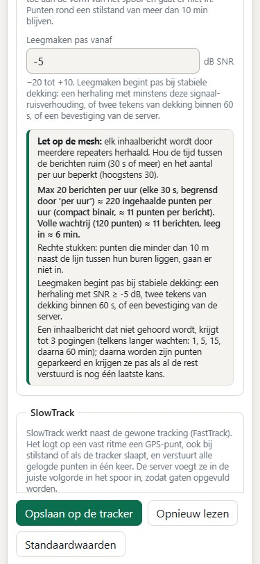
| Commando of sleutel | Betekenis |
|---|---|
| fifo | De wachtrij tonen: aantal punten, geparkeerde punten, oudste en nieuwste punt, of hij aan het inhalen is, de laatste dekking, inhaalberichten in het laatste uur, bevestigingen van de server en de berekende belasting. |
| fifo wis ja | De wachtrij wissen; de punten zijn dan definitief weg. |
| status: track_mode | classic of fifo, met daarnaast de ingestelde waarden
(fifo_max, fifo_min, fifo_gap, fifo_per_uur, fifo_pogingen,
fifo_dun, fifo_snr). |
| status: fifo | Punten in de wachtrij. |
| status: fifo_dekking | Seconden sinds de laatste dekking; - = nog nooit sinds de start. |
| status: fifo_geparkeerd | Geparkeerde punten. |
| status: fifo_bevestigd | Punten die de server sinds de start bevestigde (T1F). |
| status: fifo_wacht | De ingestelde wachttijd, bv. 30m of uit (0.9.1). |
| status: fifo_per_bericht | Hoeveel punten er met de naam van deze tracker in één inhaalbericht passen (0.9.1). |
fifo
fifo: 37 punten in de wachtrij (max 500, leegmaken vanaf 5, 0 geparkeerd); track_mode=fifo
fifo: oudste=1791540000 (2 u 14 min geleden) nieuwste=1791547860 (3 min geleden)
fifo: leegmaken bezig; laatste dekking 4 s geleden; 6 leegmaakberichten in het laatste uur (max 20)
fifo: sinds de start 12 punten door de server bevestigd (T1F)
fifo: max 20 berichten/uur (elke 30 s, begrensd door fifo_per_uur) ≈ 180 punten/uur;
volle wachtrij (500) ≈ 56 berichten, leeg in ≈ 2,1 u
fifo: ≈ 9 punten per bericht met de naam "Ploeg 3" (7 bytes); een kortere naam zonder
emoji laat meer punten toe
fifo: minder dan 5 punten maar het oudste ouder dan 30 min, en stabiele dekking: toch
versturen (fifo_wacht)
fifo: nu 37 punten in de wachtrij, waarvan 0 geparkeerd (na 3 mislukte pogingen;
laatste poging als er niets anders wacht)
fifo: let op: fifo_gap 30 s laat 120 berichten/uur toe, maar fifo_per_uur begrenst op 20.
Dat mag; de wachtrij loopt dan wel trager leeg.
fifo; lange regels zijn hier afgebroken.In Toestellen staat het tabblad Simulatie: een versnelde animatie van een rit, met de instellingen van de verbonden tracker (zonder tracker met de standaardwaarden). Zo zie je wat een instelling doet voor je ze op de tracker zet.
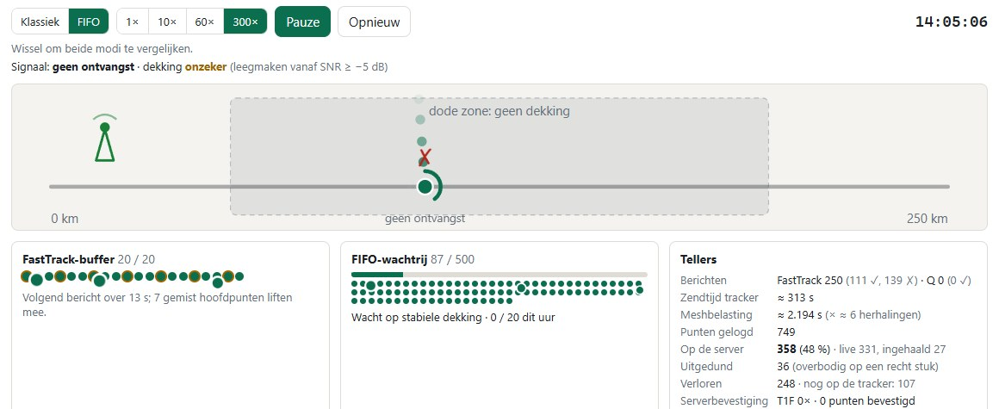
Open de website van je organisatie (bv. meshtrack.meshmanager.net) en log in met je
gebruikersnaam en wachtwoord.
Wie een deellink kreeg, ziet de kaart zonder in te loggen, maar alleen de gedeelde trackers en zolang de link geldig is. Rechtsboven staat dan een knop Inloggen.
Klik rechtsboven op je initiaal om je wachtwoord te wijzigen of een thema te kiezen. Je voorkeuren (thema, favorieten, filters) bewaart de server, zodat ze op elk toestel gelden.

Met centreren en volgen blijft de tracker in het midden bij elke nieuwe positie. Zelf de kaart verslepen of de knop volgen stoppen bovenaan beëindigt dat.


Op een telefoon staat de lijst in een onderpaneel. Sleep het streepje omhoog of omlaag om het groter of kleiner te maken, of helemaal naar beneden om het te verbergen. ☰ Lijst haalt het terug.


Het logboek toont alle gebeurtenissen per tracker. alleen bijzondere verbergt de gewone posities, CSV downloadt wat je ziet en kaart springt naar de plek van die gebeurtenis. Met live bijwerken komen nieuwe gebeurtenissen er vanzelf bij.

Teken in het tabblad Zones een cirkel of een polygoon op de kaart. Een zone meldt wanneer een tracker binnenkomt of vertrekt. Zonder het recht om gedeelde zones te beheren maak je een eigen zone, die alleen jij ziet.
Is een tracker zoek, open hem dan in Trackers en zet Verloren aan. Hij krijgt een rode markering VERLOREN op de kaart en in de lijsten.
Komt er daarna nog een bericht van hem binnen:
De server kan bij gebeurtenissen zelf een bericht (DM) via de mesh sturen, bv. naar de gsm van de wachtdienst (via de MeshCore-app) of naar een andere companion.

Meldingen gaan na elkaar weg, met een pauze ertussen, zodat de mesh niet overbelast raakt. Persoonlijke regels (met het recht Eigen meldingsregels) gelden voor je eigen zones.

De pagina Trackers heeft twee tabbladen: Trackers en Genegeerde berichten (met een teller als er iets is). Alles met een USB-kabel staat op een aparte pagina, Toestellen.
Klik op + Tracker. Er opent een paneel met de tabbladen Algemeen (naam, kleur, icoon, trackingkanaal, notities), Toestel of Simulator, en bij het bewerken Gegevens (posities opruimen, tracker verwijderen). Voor een echte tracker zijn er twee manieren:
Het trackingkanaal bepaalt wie de tracker ziet; zonder kanaal zien alleen beheerders hem. Stuurt een echte tracker op een ander kanaal van de server, dan volgt MeshTrack dat vanzelf. Bij het bewerken ruim je ook opgeslagen posities op.
Ga naar Toestellen, steek de tracker met een USB-kabel in de computer en klik op Verbinden. Dat werkt in Chrome of Edge op een computer of Android-toestel. Bovenaan zie je welk toestel verbonden is; daaronder staan de tabbladen Instellingen, Firmware, Klaarmaken & back-ups, Terminal en Simulatie.
In Instellingen staan eerst de naam van de tracker (zo heet hij in de mesh en als afzender van zijn kanaalberichten), de modus, het trackingkanaal en de belangrijkste instellingen. Een voorinstelling (te voet, fiets, voertuig, spaarzaam) vult ze in één klik in; de rest staat achter Geavanceerde instellingen tonen. Met Opslaan op de tracker schrijf je ze weg.
Vanaf firmware 0.8.0 zijn er twee groepen bij:
Firmware 0.9.0 voegt de groep Trackmodus toe: classic of FIFO en de instellingen van de wachtrij, met een live berekening van de belasting van de mesh (zie hoofdstuk 4). Het tabblad Simulatie speelt beide modi versneld na met de instellingen van de tracker.
Heeft de verbonden tracker oudere firmware, dan staan de nieuwe velden grijs: flash eerst de nieuwste firmware (hoofdstuk 9).
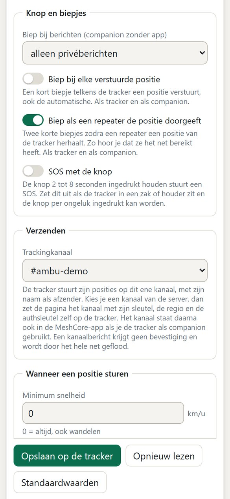
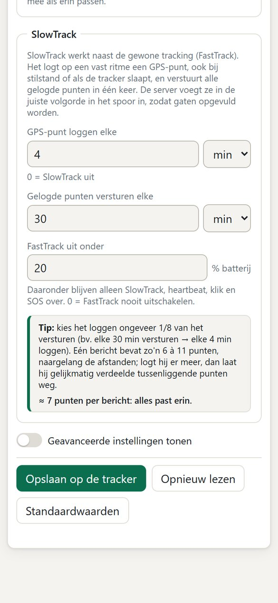
Alles uit Toestellen kun je ook met set <instelling> <waarde> zetten. Tijden schrijf je als
30s, 5m of 2h; 0 zet een tijd uit. De belangrijkste:
| Instelling | Betekenis | Standaard |
|---|---|---|
| min_speed, min_dist | Afstandsregel: minimumsnelheid (km/u) en minimale verplaatsing (m). | 10, 100 |
| turn_min, turn_min_speed | Bochtregel: graden en vanaf welke snelheid. | 30, 5 |
| min_interval, max_interval | Nooit vaker dan 1× per; in beweging minstens 1× per. | 1m, 10m |
| sample | In beweging elke zoveel tijd een punt bewaren voor het volgende bericht. | 15s |
| still_timeout, heartbeat | Slapen na stilstand van; teken van leven in rust. | 5m, 12h |
| fix_timeout, fix_timeout_hb | Hoe lang een GPS-fix zoeken; bij heartbeat of klik. | 90s, 30s |
| slow_log, slow_send | SlowTrack: punt loggen elke; gelogde punten versturen elke (0.8.0). | uit, 30m |
| fast_min_batt | Onder dit % batterij geen FastTrack; 0 = uit (0.8.0). | 0 |
| sos aan|uit | SOS door 2 tot 8 s vasthouden (0.8.0). | aan |
| tx_beep aan|uit | Kort biepje na elke automatisch verstuurde positie (0.8.0). | uit |
| heard_beep aan|uit | Twee hoge biepjes als een repeater een automatische positie herhaalt (0.8.0). | uit |
| track_mode, fifo_… | Trackmodus classic of fifo en de instellingen van de wachtrij
(0.9.0, zie hoofdstuk 4). | classic |
| msg_beep | Biep bij berichten als companion zonder app: prive, alles of uit. | prive |
| led | Statusled: companion, altijd of uit. | companion |
| track_in_companion | Ook posities sturen als companion. | aan |
| accel_sens | Bewegingsgevoeligheid: laag, midden of hoog. | midden |
status toont vanaf 0.8.0 ook slow_buffer (gelogde punten die nog verstuurd moeten worden),
fasttrack=aan of fasttrack=uit(batterij) (onder fast_min_batt) en
slow_per_bericht=6-11. Zet je slow_log en slow_send zo dat er te veel punten per
bericht komen, dan waarschuwt de tracker meteen. Vanaf 0.9.0 toont status ook de trackmodus en de toestand van de
FIFO-wachtrij, en is er het commando fifo (zie hoofdstuk 4).
Met een terminalprogramma (115200 baud) opent meteen een genummerd menu. Losse commando's (status,
set …, mode tracker, help) werken altijd.
Diagnose (firmware 0.7.5 of nieuwer): met rxlog aan toont de tracker live elk kanaalpakket dat
hij ontvangt (rx kanaalpakket hash xx, N hops, N bytes) en elk kanaalbericht dat hij kan ontcijferen
(rx kanaalbericht op kanaal N: …). Bij het aanzetten meldt hij ook de hash van zijn trackingkanaal. Dat blijft aan
tot rxlog uit of een herstart. Handig als een SOS-bevestiging niet aankomt (zie hoofdstuk 13).
q; in Toestellen → Terminal is het al dicht). Een commando log bestaat niet.============================================================== MeshTrack T1000-E fw 0.9.1 HOOFDMENU ============================================================== Ploeg 3 | modus companion (USB) | batterij 99% tracker slaapt | GPS zoekt | laatste zending: verstuurd ============================================================== 1 Status (alles) 2 Modus en knop 3 Wanneer een positie sturen 4 Ritme 5 SlowTrack en trackmodus (FIFO) 6 Stilstand en heartbeat 7 GPS en verzending 8 Nu een positie sturen 9 Onderhoud 0 Menu sluiten Keuze: _
==============================================================
MeshTrack T1000-E fw 0.9.1 MODUS EN KNOP
==============================================================
Op batterij nu gekozen: tracker.
Met USB altijd companion.
1 Kies tracker (BLE uit, radio slaapt)
2 Kies companion (MeshCore-app)
3 Ook posities sturen als companion ...... aan
4 Statusled ............... alleen als companion
5 SOS door vasthouden ........................ uit
6 Biep na elk verstuurd positiebericht ....... uit
7 Biep als een repeater het herhaalt ......... aan
(6 en 7 niet bij klik of SOS)
Knop: 1x = positie nu, 2x = modus wisselen,
3x = buzzer aan/uit,
2-8 s vasthouden = niets (SOS uit),
langer dan 8 s = uitschakelen.
0 Terug
In Toestellen → Firmware staat de nieuwste MeshTrack-firmware klaar, met de datum en de wijzigingen. Je flasht ze rechtstreeks vanuit de browser, zonder extra programma's.

.bin) en de sleutel met de instellingen
(.json). Mag je sleutels beheren, dan gaat die ook naar de server. Lukt de back-up niet, dan wordt er niets geflasht.Liever zonder browser? Download het DFU-pakket (.zip) voor adafruit-nrfutil, of het UF2-bestand:
dubbelklik op de resetknop zodat er een USB-station verschijnt en sleep het bestand erop.
Een nieuwe tracker hoef je niet met de hand in te stellen: de server maakt de sleutel en zet alles in één keer op het toestel.

Het toestel krijgt de sleutel, zijn naam, de radio-instellingen, de regio, 2 bytes per hop en het kanaal Public, en start in trackermodus; het trackingkanaal zet je in de laatste stap. Had het al een andere sleutel, dan wordt die eerst als back-up gedownload.
Een back-up bewaart ook de instellingen van firmware 0.8.0 (SlowTrack, fast_min_batt, SOS en de biepjes) en 0.9.0
(de trackmodus en de instellingen van de wachtrij). Vroeger
werd een instelling die op uit stond soms als 0 teruggezet; dat is opgelost.
Een tracker stuurt zijn posities op één kanaal. Kies je in Toestellen → Instellingen bij Trackingkanaal een kanaal van de server, dan zet de pagina het kanaal (met sleutel en regio) en de authsleutel op de tracker. De server luistert mee op de kanalen onder Systeem → Kanalen. Als afzender staat de naam van de tracker, zodat je hem herkent in de MeshCore-app en in analyzers.

Elke gebruiker zit in een of meer groepen. Een groep bepaalt de rechten, welke trackers zichtbaar zijn en hoe ver je terug in de tijd kijkt. Zit je in meerdere groepen, dan krijg je de som: alle rechten en trackers samen, en de ruimste terugblik. Standaard zijn er vier groepen:
| Groep | Wat mag het |
|---|---|
| Beheerders | Alles, ook gebruikers, systeeminstellingen, sleutels en back-ups. |
| Operators | Dagelijks werk: trackers, zones, simulators, meldingen en deellinks. Geen sleutels. |
| Kijkers | Meekijken met de lijst, de sporen en het logboek (7 dagen terug), niets wijzigen. |
| Kiosk | Alleen de kaart, schermvullend, bv. op een groot scherm in de post. |
Elke tracker stuurt op één kanaal. In Gebruikers → Groepen en rechten kies je bij een groep per kanaal een niveau:
| Niveau | Wat de groep krijgt |
|---|---|
| geen | Niets van dit kanaal. |
| kaart | De trackers van dit kanaal op de kaart, in het logboek, in exports en in meldingsregels. |
| sleutel | Alles van kaart, plus de naam, de sleutel en de QR-code van het kanaal (pagina Kanalen en Toestellen), om het op een eigen companion te zetten, bv. voor de offline-app. |
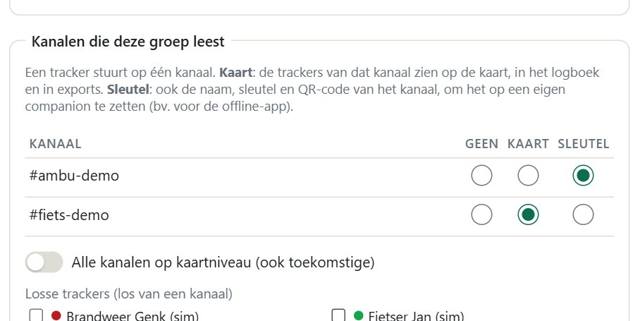
Met Alle kanalen ziet een groep alle trackers op kaartniveau, ook van kanalen die later bijkomen; daarnaast kun je nog losse trackers geven. Zit een gebruiker in meerdere groepen, dan krijgt hij per kanaal het hoogste niveau.
Stuurt een tracker later op een ander kanaal, dan volgen de rechten meteen, ook op een kaart die al openstaat.
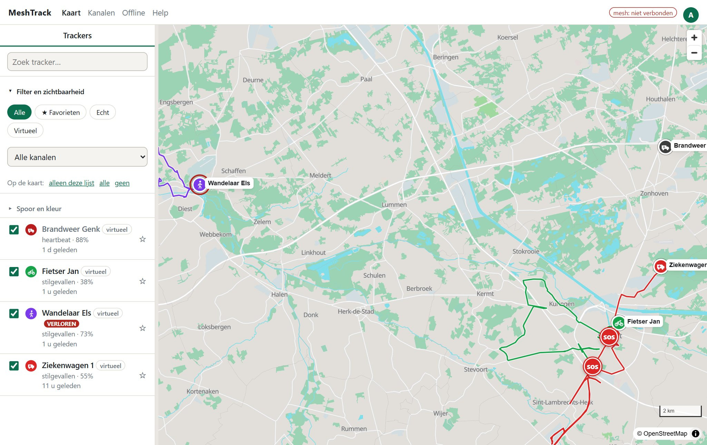
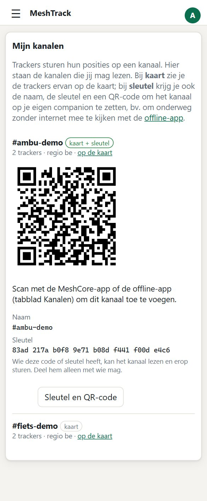
Onder Kanalen in het menu ziet elke gebruiker de kanalen die hij mag lezen, met een link naar de kaart van dat kanaal. Bij niveau sleutel toont Sleutel en QR-code de code om te scannen met de MeshCore-app of de offline-app.

Klik bij een gebruiker op Effectieve rechten om te zien wat de gebruiker écht mag en ziet: de rechten met de groep waar ze vandaan komen, per kanaal het niveau, de zichtbare trackers met de reden (een kanaal, alle kanalen of een losse tracker), wat niet zichtbaar is, en de terugblik. Zo ga je na of een nieuwe gebruiker alleen ziet wat de bedoeling is.
Met deellinks toon je de trackers van gekozen kanalen of losse trackers aan iemand zonder account, tot de link verloopt. Je kunt een link altijd intrekken.

Hier stel je de pauze en het aantal pogingen voor meldingen in, de bewaartermijn van posities, wanneer een tracker grijs wordt en de standaardwaarden voor nieuwe trackers: frequentie, bandbreedte, spreading factor, coding rate, zendvermogen, bytes per hop, regio en het kanaal Public.
Met de offline-app volg je trackers zonder internet en zonder de server, bijvoorbeeld op een terrein zonder bereik. Je hebt er geen account voor nodig en de app gebruikt niets uit de database van MeshTrack: van de server komen alleen de kaarten. Wie de sleutel van het kanaal kent, ziet de trackers op dat kanaal. Je telefoon verbindt via Bluetooth met een MeshCore-companion: een tracker in companionmodus, of een andere companion die op het kanaal van de trackers meeluistert. De companion ontcijfert de kanaalberichten; de app leest ze, bewaart ze op de telefoon en tekent de sporen op een kaart die op de telefoon staat.
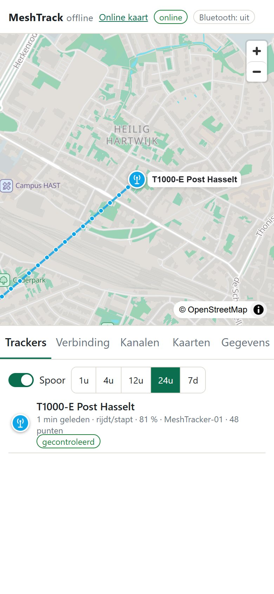
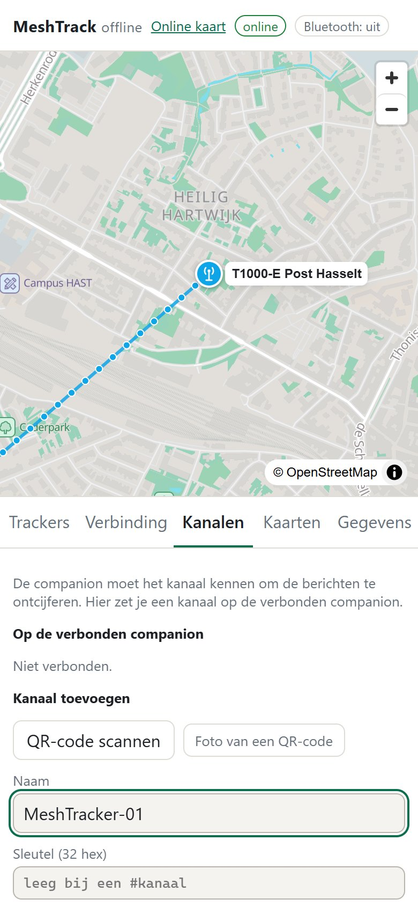
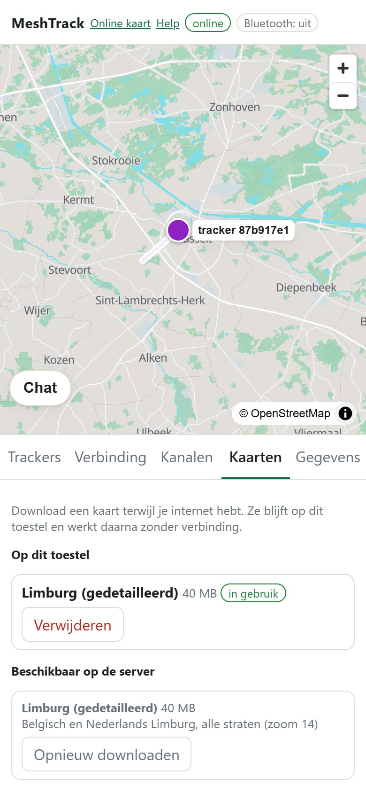
| Kaart | Grootte |
|---|---|
| Limburg, alle straten | 84 MB |
| België, tot op straatniveau | 286 MB |
| Benelux, overzicht / de meeste straten | 44 / 276 MB |
| Frankrijk, overzicht / de meeste straten | 216 MB / 1,1 GB |
| Duitsland, overzicht / de meeste straten | 157 / 884 MB |
De companion moet het kanaal kennen. Bij Kanalen zet je het erop: scan de QR-code (uit de MeshCore-app of van Systeem → Kanalen), kies een foto van een QR-code, of vul naam en sleutel in. Bij een #kanaal mag de sleutel leeg blijven.
Tik bij Verbinding op Verbinden en kies de companion (pincode van een MeshTrack-tracker: 123456). De app haalt eerst alle wachtende berichten op en daarna elk nieuw bericht zodra het binnenkomt.
Bij Trackers kies je in de keuzelijst Kanaal een van de kanalen die op de companion staan; de kaart en de lijst tonen dan alleen de trackers van dat kanaal. Staat het kanaal er niet bij, kies dan + Kanaal toevoegen…: je komt bij Kanalen, waar je het toevoegt met naam en sleutel, een QR-scan of een foto.
De namen van de trackers komen uit de contacten van de companion; een tracker die de companion (nog) niet kent, staat er met het begin van zijn sleutel. De controletekens in de berichten kan alleen de server nakijken. Verbind je met een tracker in companionmodus (firmware 0.6.2 of nieuwer), dan zie je ook zijn eigen posities, gemarkeerd als eigen.
De app houdt de trackerberichten apart. De rest op de kanalen van de companion, en privéberichten aan de companion, staat in de Chat: de knop linksonder op de kaart, met het aantal nieuwe berichten. Kies een kanaal om zelf een bericht te sturen.
Onder elk verstuurd bericht staat hoe vaak het via een repeater gehoord is en via welke, bijvoorbeeld 2× gehoord via e3d3, 51f0. Bij een tracker in companionmodus zie je dat ook bij zijn eigen posities.
Wat je verstuurt, gaat met de regio (scope) uit Verbinding, standaard be. Is de companion de tracker zelf, dan geldt die regio ook voor zijn posities zolang de app verbonden is.
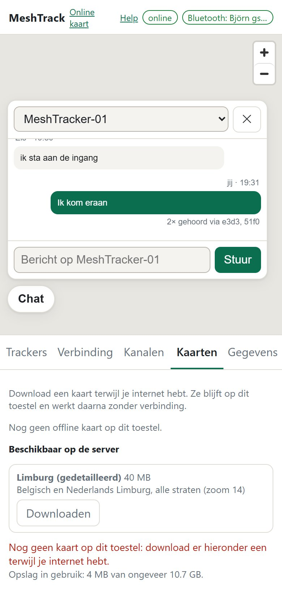
Alles blijft op de telefoon tot je het bij Gegevens wist; daar exporteer je de posities ook als CSV. Bluetooth werkt in Chrome op Android en op een computer, niet op een iPhone.
| Probleem | Wat te doen |
|---|---|
| mesh: niet verbonden | De companion op de server is niet bereikbaar, of een ander programma is ermee verbonden (er kan maar één verbinding tegelijk). Verwittig de beheerder. |
| Tracker verschijnt niet | Kijk in Trackers → Genegeerde berichten. Klopt de pubkey? Heeft hij een trackingkanaal dat de server kent, en de juiste authsleutel? Staat er oude firmware, flash dan de nieuwste firmware. Ziet een beheerder hem wel en een gebruiker niet, kijk dan naar diens Effectieve rechten. |
| Lage toon na een klik | De tracker heeft geen (geldig) trackingkanaal, of geen repeater hoorde het bericht. Kies een kanaal in Toestellen → Instellingen, of probeer op een plek met meer bereik. |
| SOS terwijl niemand iets deed | Waarschijnlijk werd de knop ingedrukt in een zak, tas of houder. Kijk hoe de tracker
zit, of zet SOS met de knop uit (Toestellen → Knop en biepjes, of set sos uit; firmware 0.8.0).
Uitschakelen door lang vasthouden blijft werken. |
| Geen bewegingsberichten meer | Toont status fasttrack=uit(batterij)? Dan zit de
batterij onder fast_min_batt. Laad hem op: vanaf 3 % hoger gaat FastTrack weer aan. SlowTrack, heartbeat, klik
en SOS werken intussen door. |
| Geen SlowTrack-punten (L) | SlowTrack staat standaard uit: zet Punt loggen elke (slow_log)
op een tijd. De punten komen pas na Versturen elke (slow_send); slow_buffer in
status toont hoeveel er klaarstaan. In rust logt SlowTrack niet (firmware 0.9.1). Gaat een bericht verloren, dan blijven de punten in de buffer voor het volgende. |
| Het spoor vult zich achteraf | Normaal bij SlowTrack: gelogde punten komen later binnen en de server zet ze op hun eigen tijd in het spoor. De live-positie springt daardoor niet terug. |
| Velden grijs in Toestellen | De tracker heeft oudere firmware dan die velden nodig hebben (0.8.0 voor Knop en biepjes en SlowTrack, 0.9.0 voor Trackmodus). Flash de nieuwste firmware (hoofdstuk 9). |
| Na 0.9.0 ontbreken punten | Ontbreken SlowTrack- of ingehaalde punten, of staan er berichten bij Genegeerde berichten? Dan is de server ouder dan 1.2.0 en kent hij de nieuwe berichten niet. Laat de beheerder eerst de server bijwerken; server 1.2.0 leest ook oudere firmware. |
| FIFO-wachtrij loopt niet leeg | Typ fifo. Staat track_mode=classic, typ dan
set track_mode fifo. Wachten er minder dan fifo_min punten, dan begint hij pas als het oudste ouder is dan
fifo_wacht. Hij haalt pas in bij stabiele
dekking: toont fifo_dekking een groot getal of -, dan hoort hij geen repeater; hoort hij er een maar
zwak, verlaag fifo_snr (bv. −10) of zoek beter bereik. Gepauzeerd (fifo_per_uur): het uurmaximum is
bereikt, hij gaat vanzelf verder. Na een niet herhaald inhaalbericht wacht hij 1, 5, 15 of 60 min. Hij haalt alleen in zolang
hij zelf posities stuurt (trackermodus, of companion met posities aan). |
| Geparkeerde punten | fifo_geparkeerd groter dan 0: die punten raakten na fifo_pogingen
pogingen niet door. Ze krijgen nog één laatste poging als niets anders wacht en worden dan opgegeven. Meestal kwamen ze toch
aan; kijk op de kaart. Je hoeft niets te doen. |
| Veel berichten op de mesh | Trackers in FIFO-modus die inhalen: verhoog fifo_gap, verlaag
fifo_per_uur, kies een kleinere fifo_max of een grotere fifo_dun, of geef de tracker een
kortere naam zonder emoji. fifo
en Toestellen tonen meteen wat dat geeft. |
| "f" of T1F-berichten | Normaal. Met f achteraan een inhaalbericht vraagt de tracker een
bevestiging; de server antwoordt met T1F, hoogstens 20 keer per uur in totaal. Komt er nooit een T1F, kijk dan of de
tracker een authsleutel heeft (zonder handtekening bevestigt de server niets) en of de server 1.2.0 of nieuwer is.
Met rxlog aan zie je of de T1F aankomt. |
| Bewegingssensor voelt niets (goed geveerde auto) | Ook de GPS-snelheid telt als beweging: de tracker gaat pas
slapen als hij langer dan still_timeout (standaard 5 min) geen van beide merkt. Voor een rood licht valt hij dus niet in
slaap. Pas na een stop die langer duurt dan still_timeout moet de sensor hem alleen wekken. Voor een heel soepele auto:
set accel_sens hoog, of een langere still_timeout (bv. 10 min). |
| Batterij loopt sneller leeg | Staat Biep als een repeater de positie doorgeeft aan? Dan blijft de radio na
elk bericht ongeveer 12 s wakker. Ook een kort slow_log kost stroom, omdat de GPS dan vaker aan moet. |
| SOS-bevestiging komt niet aan | Toont status path_bytes=2? Zo niet:
set path_bytes 2 en reboot. Sommige repeaters sturen 1-byte padhashes niet door; de server (vanaf 1.0.5) zet
zijn companion daarom op 2 bytes (serverlog: padhashes van de companion op 2 bytes gezet). Met rxlog aan
zie je of de T1A op de tracker aankomt. |
| Dubbelklik: één biep | Hij zag maar één klik. Druk twee keer kort en duidelijk, met hooguit 0,8 s ertussen. |
| Geen GPS-fix (N) | Binnen of onder een dak vindt hij moeilijk satellieten. Leg hem even buiten met de bovenkant naar de hemel. |
| De kaart blijft leeg | Herlaad de pagina met Ctrl+F5. |
| Verbinden via USB lukt niet | Gebruik Chrome of Edge (geen Firefox of Safari), via https of localhost. Sluit andere programma's die de poort gebruiken (terminal, MeshCore-app op de pc). |
| Flashen blijft hangen | Trek de USB-kabel uit en steek hem terug in; de oude firmware start weer. Probeer opnieuw en kies de bootloader-poort als de browser erom vraagt. |
| "Firmware kan geen sleutel ontvangen" | Flash eerst de nieuwste firmware; klaarmaken kan pas vanaf 0.3.1. |
| Andere pubkey na flashen | Klik op Sleutel en instellingen terugzetten, of zet de back-up terug via Op verbonden toestel zetten. |